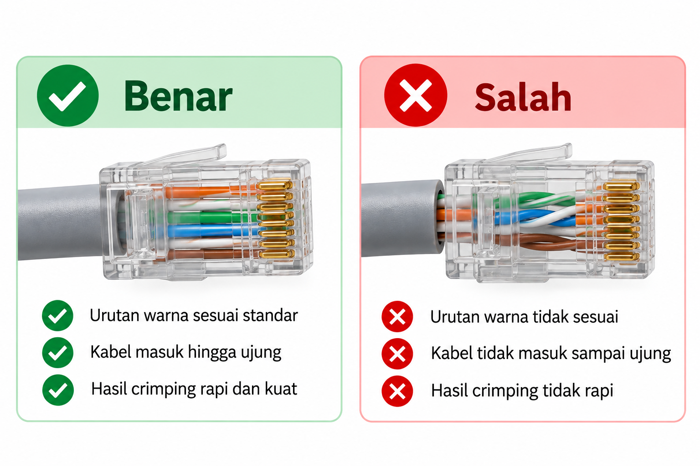

BAB 6 — Kriteria Hasil, Kesalahan Umum, dan Evaluasi Akhir
- Peserta didik mampu memeriksa hasil pemasangan konektor RJ-45 secara visual.
- Peserta didik mampu mengidentifikasi dan memperbaiki kesalahan umum dalam pemasangan konektor.
6.1 Delapan Kriteria Hasil Pemasangan yang Baik
Setelah kalian menghasilkan kabel yang telah ter-crimp pada pertemuan sebelumnya, saatnya mempelajari cara menilai sendiri apakah hasil pekerjaan kalian sudah baik. Berikut delapan kriteria yang digunakan untuk menilai hasil pemasangan konektor RJ-45.
| No | Kriteria | Cara Memeriksa |
|---|---|---|
| 1 | Susunan warna sesuai standar | Bandingkan urutan pin 1–8 dengan tabel T568B. |
| 2 | Urutan tidak tertukar | Periksa satu per satu, terutama pasangan hijau dan oranye. |
| 3 | Inti kabel masuk dengan benar | Lihat dari samping, pastikan semua ujung kawat menyentuh ujung konektor. |
| 4 | Konektor terpasang kuat | Tarik perlahan; konektor tidak boleh goyang atau bergeser. |
| 5 | Jaket kabel tertahan dengan baik | Pastikan bagian jaket ikut terjepit oleh bagian penjepit konektor. |
| 6 | Tidak ada bagian kabel yang rusak | Periksa tidak ada kawat yang terpotong, tergores, atau putus. |
| 7 | Hasil pekerjaan rapi | Tidak ada kawat yang menyilang, terlipat, atau keluar jalur. |
| 8 | K3 diterapkan selama proses | Refleksikan apakah seluruh prosedur keselamatan telah diikuti. |

6.2 Sepuluh Kesalahan Umum dan Cara Memperbaikinya
Berikut adalah kesalahan-kesalahan yang paling sering dialami peserta didik saat pertama kali belajar memasang konektor RJ-45, beserta penjelasan penyebab dan cara memperbaikinya pada kesempatan berikutnya.
Kesalahan 1 — Urutan Warna Tertukar
Kondisi: dua kawat bertukar posisi, misalnya hijau dan oranye tertukar.
Penyebab: tergesa-gesa atau rancu dengan standar T568A.
Cara memperbaiki: selalu ucapkan urutan warna dengan lantang sambil menyusun, dan bandingkan dengan tabel sebelum memasukkan ke konektor.
Kesalahan 2 — Ada Kawat yang Tidak Sampai Ujung
Kondisi: satu atau lebih kawat lebih pendek dari yang lain sehingga tidak menyentuh bagian dalam ujung konektor.
Penyebab: ujung kawat tidak dipotong rata sebelum dimasukkan.
Cara memperbaiki: selalu potong ujung kawat rata menggunakan tang crimping sebelum memasukkannya ke konektor.
Kesalahan 3 — Jaket Kabel Tidak Ikut Masuk
Kondisi: bagian jaket yang tidak dikupas tertinggal di luar konektor, tidak ikut terjepit.
Penyebab: kabel tidak didorong cukup dalam saat dimasukkan ke konektor.
Cara memperbaiki: pastikan mendorong kabel sampai jaketnya juga masuk ke bagian belakang konektor sebelum crimping.
Kesalahan 4 — Pin Tidak Menembus Kawat dengan Sempurna
Kondisi: setelah di-crimp, salah satu pin terlihat tidak menembus kawat dengan rata dibandingkan pin lainnya.
Penyebab: tekanan crimping tidak merata atau kurang kuat.
Cara memperbaiki: pastikan menekan kedua pegangan tang dengan tenaga yang merata dan penuh, bukan hanya salah satu sisi.
Kesalahan 5 — Kawat Rusak Saat Dikupas
Kondisi: salah satu kawat putus atau tergores saat proses pengupasan jaket.
Penyebab: menekan stripper terlalu dalam.
Cara memperbaiki: kupas dengan tekanan ringan, cukup untuk memotong jaket luar saja, tidak menyentuh kawat tembaga di dalamnya.
Kesalahan 6 — Susunan Kawat Tidak Rapi
Kondisi: ada kawat yang menyilang atau terlipat sebelum masuk konektor.
Penyebab: kurang teliti saat meluruskan dan menyusun kawat.
Cara memperbaiki: luruskan setiap kawat satu per satu dengan sabar sebelum menyusunnya berurutan.
Kesalahan 7 — Konektor Terasa Goyang
Kondisi: setelah di-crimp, konektor dapat digoyangkan atau ditarik keluar dengan mudah.
Penyebab: konektor tidak masuk sepenuhnya ke slot tang crimping saat ditekan.
Cara memperbaiki: pastikan konektor benar-benar masuk sepenuhnya ke dalam slot crimper sebelum ditekan.
Kesalahan 8 — Terburu-buru Sebelum Memeriksa
Kondisi: langsung melakukan crimping tanpa memeriksa susunan warna dan posisi kawat terlebih dahulu.
Penyebab: tidak sabar atau ingin cepat selesai.
Cara memperbaiki: biasakan selalu melakukan pemeriksaan menggunakan tabel pada Bab 4 sebelum crimping, tanpa terkecuali.
Kesalahan 9 — Salah Memegang Arah Konektor
Kondisi: susunan warna sebenarnya benar, namun terbalik arah karena posisi konektor salah saat menyusun.
Penyebab: tidak konsisten menjadikan posisi pengunci sebagai patokan arah.
Cara memperbaiki: selalu pastikan posisi pengunci menghadap ke bawah sebagai acuan arah setiap kali menyusun kawat.
Kesalahan 10 — Tidak Menerapkan K3
Kondisi: bekerja sambil bercanda, tidak fokus, atau tidak berhati-hati saat memegang alat tajam.
Penyebab: kurang kesadaran akan pentingnya keselamatan kerja.
Cara memperbaiki: selalu ingat bahwa K3 adalah bagian dari keterampilan teknisi yang profesional, bukan aturan tambahan yang boleh diabaikan.
6.3 Kegiatan Peserta Didik — LKPD 6.1 (Checklist Akhir)
Periksa hasil kabel yang telah kalian pasangi konektor menggunakan checklist berikut. Beri tanda centang pada kolom yang sesuai untuk setiap kriteria.
| Kriteria (dari bagian 6.1) | Terpenuhi | Belum Terpenuhi | Rencana Perbaikan |
|---|---|---|---|
| Susunan warna sesuai standar | |||
| Urutan tidak tertukar | |||
| Inti kabel masuk dengan benar | |||
| Konektor terpasang kuat | |||
| Jaket kabel tertahan dengan baik | |||
| Tidak ada bagian kabel yang rusak | |||
| Hasil pekerjaan rapi | |||
| K3 diterapkan selama proses |
Setelah mengisi checklist, jawablah refleksi berikut: Saya sudah mampu — mengenali RJ-45 , menyusun warna T568B , mengupas kabel , merapikan inti kabel , memasukkan kabel ke RJ-45 , melakukan crimping , menerapkan K3 .
6.4 Rangkuman Akhir Tujuan Pembelajaran 8
- Pemasangan konektor RJ-45 pada kabel UTP terdiri dari enam tahap besar: menyiapkan bahan, mengupas jaket, meluruskan dan menyusun kawat, memasukkan ke konektor, crimping, dan memeriksa hasil.
- Ukuran kupasan yang ideal sekitar 2–3 cm; ujung kawat harus dipotong rata sebelum dimasukkan ke konektor.
- Sebelum crimping, wajib diperiksa empat hal: urutan warna, posisi ujung kawat, posisi jaket kabel, dan kerapian susunan.
- Proses crimping membutuhkan tekanan yang mantap dan merata agar pin benar-benar menembus dan mengunci kawat.
- Delapan kriteria menilai hasil yang baik dan sepuluh kesalahan umum menjadi acuan untuk memeriksa dan memperbaiki hasil kerja.
- Pengujian menggunakan LAN tester akan dipelajari lebih lanjut pada TP 9.